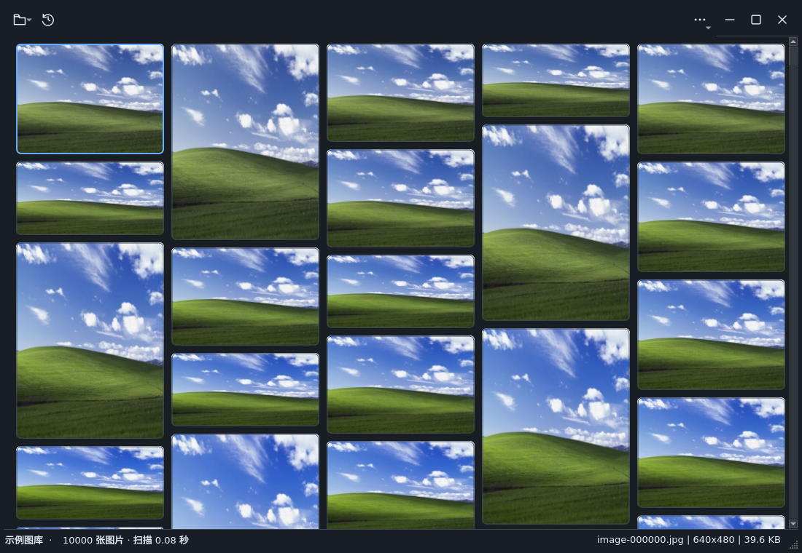
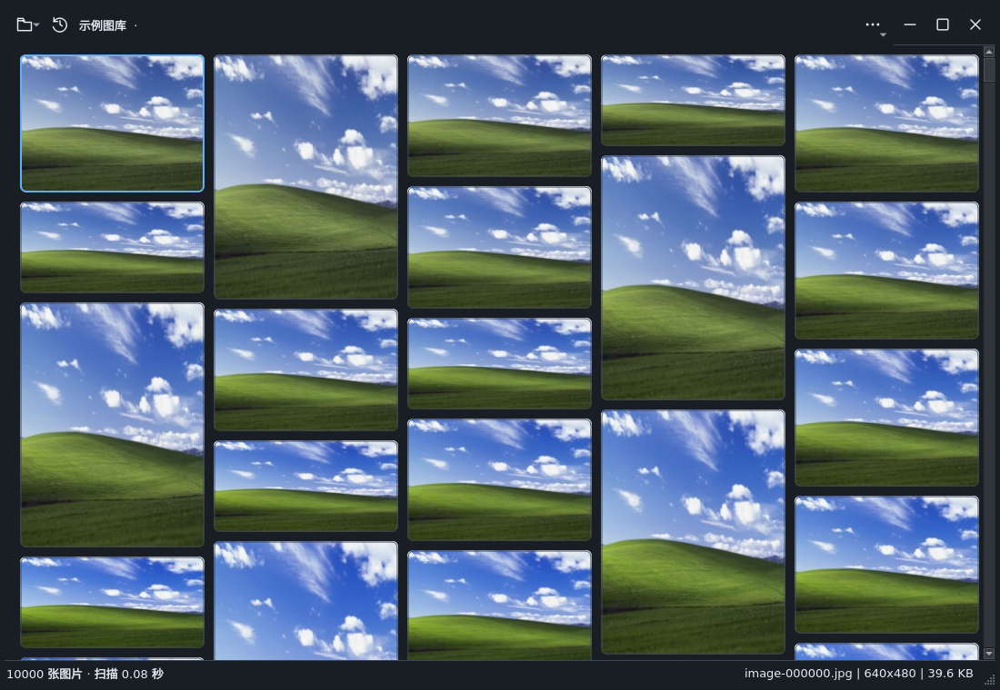
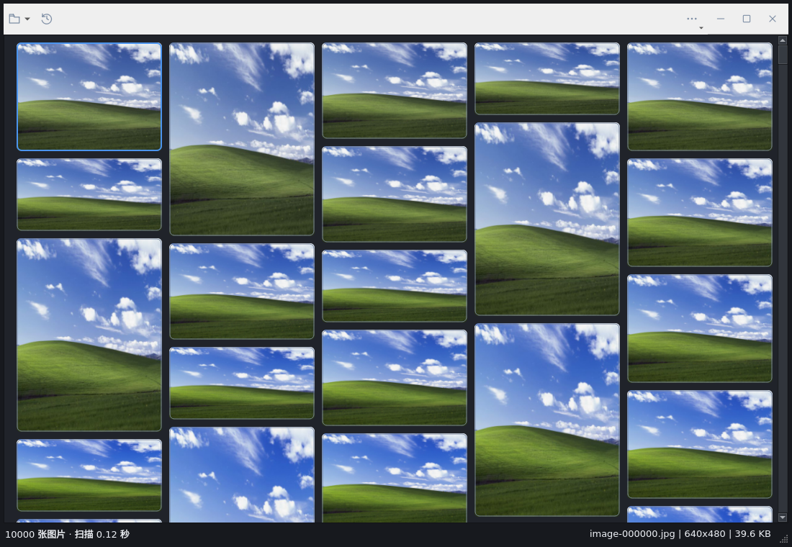
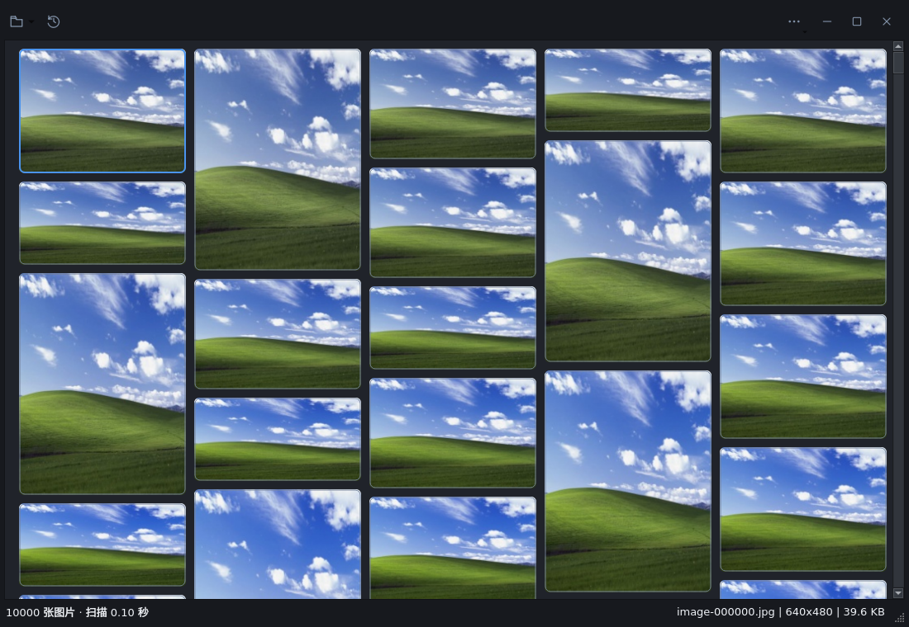

A · 极简图库 优先建议
目录短名称放入既有状态行。图库和预览尽量把面积留给图片，不增加常驻图片条。
新增 1 个上下文标签不新增缩略图控件

以下均为实际 Qt Widgets 窗口截图。A/B 是独立候选，未编入正式程序。
单屏独立 X11 虚拟显示 · 不操作当前桌面 · 图标按钮保留提示 · 不恢复路径栏
目录短名称放入既有状态行。图库和预览尽量把面积留给图片，不增加常驻图片条。

顶部显示短目录名。预览提供可收起的邻近缩略图，适合连续选片；窄窗口的图片区域会更小。

| 维度 | A | B |
|---|---|---|
| 图片面积 | 保持既有单行工具栏与状态行 | 图片条展开时额外占用 84px 逻辑高度 |
| 定位和选片 | 依靠图库选中与既有前后导航 | 可见邻近图片可直接点击，便于回看 |
| 像素与对象 | 不增加图片像素容器 | 仅 7 个小图图标；隐藏时释放，数量不随图库增长 |
| 复杂度 | 低，适合先落地 | 中，需要继续验收随机导航、缺图与 DPI 刷新 |
两套候选都沿用现有窗口、瀑布流和解码逻辑。卡片悬停／选中／键盘焦点的细化，留待选定方案后正式实现和回归。
Ctrl+横向或零增量滚轮不再缩小；像素滚动按纵向方向处理。标题栏删除重复背景样式，改用 Qt 调色板填充。
修正前

公共修正后

A/B 的颜色、信息布局和图片条仍是候选，以上公共修正不等于选择了某套新 UI。
复用既有 benchmark 探针；1 万张已有 JPEG、同一视口、三次独立进程、应用缓存预热。数值用于比较候选成本，不代替 10 万／30 万正式验收。
| 方案 | 峰值 RSS | 已加载空闲 CPU | 深色图库绘制 | 预览绘制 |
|---|---|---|---|---|
| 测量待完成 | ||||